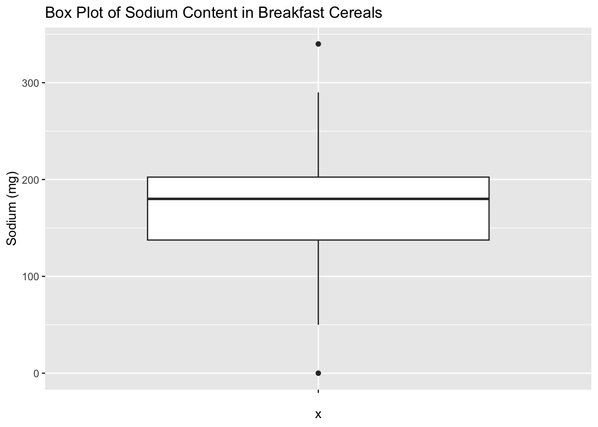
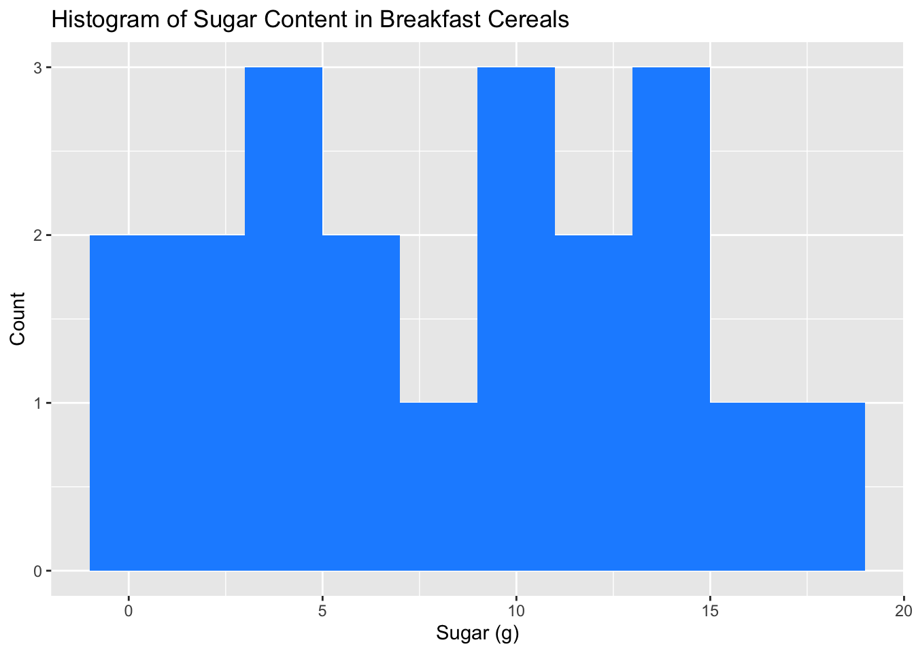
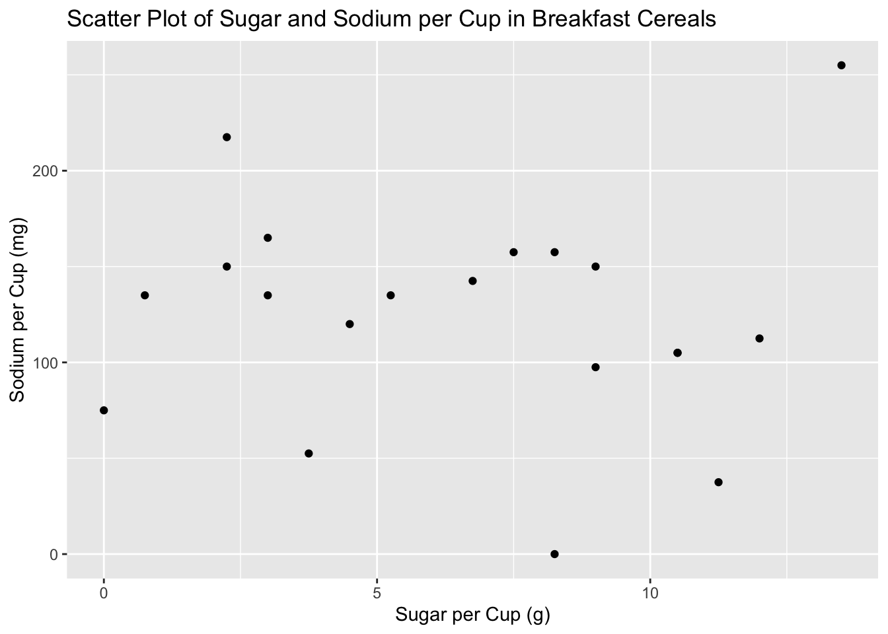
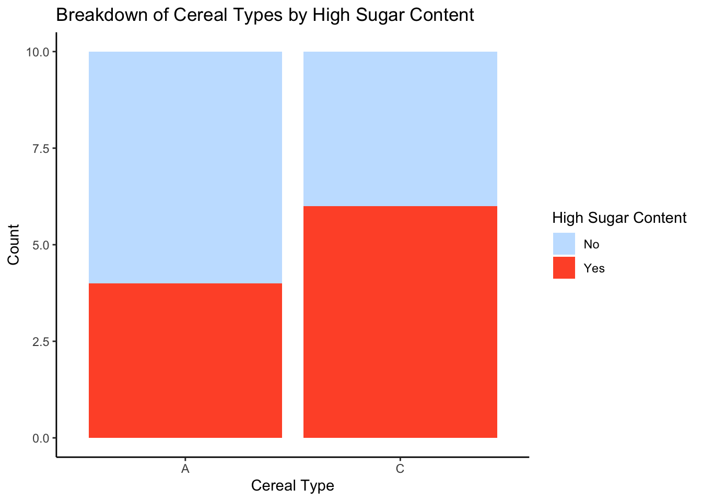

Code
library(tidyverse)
library(ggplot2)
library(readxl)
library(ggrepel)
library(here)
knitr::opts_chunk$set(echo = TRUE, warning=FALSE, message=FALSE)Pradhakshya Dhanakumar
April 18, 2023
# A tibble: 6 × 4
Cereal Sodium Sugar Type
<chr> <dbl> <dbl> <chr>
1 Frosted Mini Wheats 0 11 A
2 Raisin Bran 340 18 A
3 All Bran 70 5 A
4 Apple Jacks 140 14 C
5 Captain Crunch 200 12 C
6 Cheerios 180 1 C Dataset Description:
The cereal dataset consists of 20 observations and 5 variables, including the name of the cereal, the amount of sodium and sugar per serving, a categorical variable indicating the type of cereal, and a numerical variable indicating the type of cereal’s health rating. The data is structured as a table with each row representing a different cereal and each column containing information about the cereal. The dataset provides information on various types of cereals, including popular brands such as Frosted Flakes, Raisin Bran, and Cheerios, and can be used to analyze the nutritional content of breakfast cereals and compare different types of cereals based on their sugar and sodium content.
# A tibble: 6 × 4
cereal sodium sugar type
<chr> <dbl> <dbl> <chr>
1 Frosted Mini Wheats 0 11 A
2 Raisin Bran 340 18 A
3 All Bran 70 5 A
4 Apple Jacks 140 14 C
5 Captain Crunch 200 12 C
6 Cheerios 180 1 C The data looks tidy for further analysis and visualizations.
# A tibble: 20 × 6
cereal sodium sugar type sugar_per_cup sodium_per_cup
<chr> <dbl> <dbl> <chr> <dbl> <dbl>
1 Frosted Mini Wheats 0 11 A 8.25 0
2 Raisin Bran 340 18 A 13.5 255
3 All Bran 70 5 A 3.75 52.5
4 Apple Jacks 140 14 C 10.5 105
5 Captain Crunch 200 12 C 9 150
6 Cheerios 180 1 C 0.75 135
7 Cinnamon Toast Crunch 210 10 C 7.5 158.
8 Crackling Oat Bran 150 16 A 12 112.
9 Fiber One 100 0 A 0 75
10 Frosted Flakes 130 12 C 9 97.5
11 Froot Loops 140 14 C 10.5 105
12 Honey Bunches of Oats 180 7 A 5.25 135
13 Honey Nut Cheerios 190 9 C 6.75 142.
14 Life 160 6 C 4.5 120
15 Rice Krispies 290 3 C 2.25 218.
16 Honey Smacks 50 15 A 11.2 37.5
17 Special K 220 4 A 3 165
18 Wheaties 180 4 A 3 135
19 Corn Flakes 200 3 A 2.25 150
20 Honeycomb 210 11 C 8.25 158. 
A box plot for sodium in the cereal dataset can provide useful insights into the distribution of sodium content in the cereals. The vertical axis of the box plot represents the sodium values, while the horizontal axis represents the cereal variable. The box of the plot represents the interquartile range (IQR) of the sodium variable, where the upper and lower edges of the box indicate the 75th and 25th percentiles of the distribution, respectively. The line inside the box represents the median of the distribution. The whiskers above and below the box indicate the range of the data, while any outliers are represented by individual points outside of the whiskers. By examining the box plot, we can quickly identify the cereals with high and low sodium content and gain insights into the variability and distribution of sodium content across different cereal types.

A histogram of sugar content in breakfast cereals is a visualization tool that displays the frequency distribution of sugar content in the cereal dataset. The histogram provides a quick overview of the distribution of sugar content in the cereals, showing how many cereals fall into different sugar content ranges. We can use the histogram to identify the most common sugar content range and any outliers or unusual patterns in the data. The shape of the histogram can also provide insights into the skewness or symmetry of the sugar content distribution. Overall, a histogram of sugar content in breakfast cereals is a useful tool for exploring the distribution and frequency of sugar content in the dataset.

A scatter plot of sugar and sodium per cup in breakfast cereals is a visualization tool that displays the relationship between two continuous variables, sugar and sodium, in the cereal dataset. The scatter plot allows us to examine the relationship between these two variables, revealing whether there is any correlation or pattern between sugar and sodium content in the cereals.The scatter plot can provide valuable insights into the cereal dataset, such as identifying clusters or patterns in the data and detecting any outliers or unusual values. It can also help us to explore the strength and direction of the relationship between sugar and sodium content in breakfast cereals. Overall, a scatter plot of sugar and sodium per cup in breakfast cereals is a useful tool for analyzing and visualizing the relationship between these two important nutrient components in the cereals.
data$HighSugar <- ifelse(data$sugar >= 10, "Yes", "No")
ggplot(data, aes(x = type, fill = HighSugar)) +
geom_bar() +
labs(title = "Breakdown of Cereal Types by High Sugar Content", x = "Cereal Type", y = "Count") +
scale_fill_manual(name = "High Sugar Content", values = c("Yes" = "#FF5733", "No" = "#C6E2FF")) +
theme_classic()
After creating a new variable “HighSugar” based on sugar content, a stacked bar chart can be created to visualize the frequency distribution of cereal types based on high sugar content.The stacked bar chart allows us to compare the proportion of high and low sugar content cereals across different cereal types. The stacked bar chart also allows us to see the overall distribution of high and low sugar content cereals in the dataset, revealing that the majority of cereals have low sugar content. This information can be used to inform dietary choices and to identify potential high sugar content cereals to avoid.
---
title: "Challenge 5"
author: "Pradhakshya Dhanakumar"
desription: "Worked with Cereal Data"
date: "04/18/2023"
format:
html:
toc: true
code-fold: true
code-copy: true
code-tools: true
categories:
- Challenge 5
- Pradhakshya Dhanakumar
- Cereal
---
```{r}
#| label: setup
#| warning: false
library(tidyverse)
library(ggplot2)
library(readxl)
library(ggrepel)
library(here)
knitr::opts_chunk$set(echo = TRUE, warning=FALSE, message=FALSE)
```
## Read Data
```{r}
data <- read_csv("_data/cereal.csv")
```
```{r}
dim(data)
```
```{r}
colnames(data)
```
```{r}
head(data)
```
Dataset Description:
The cereal dataset consists of 20 observations and 5 variables, including the name of the cereal, the amount of sodium and sugar per serving, a categorical variable indicating the type of cereal, and a numerical variable indicating the type of cereal's health rating. The data is structured as a table with each row representing a different cereal and each column containing information about the cereal. The dataset provides information on various types of cereals, including popular brands such as Frosted Flakes, Raisin Bran, and Cheerios, and can be used to analyze the nutritional content of breakfast cereals and compare different types of cereals based on their sugar and sodium content.
## Tidy Data
```{r}
#Check for missing values
sum(is.na(data))
```
```{r}
#renaming columns to lowercase and replace spaces with underscores:
names(data) <- tolower(names(data))
names(data) <- gsub(" ", "_", names(data))
head(data)
```
The data looks tidy for further analysis and visualizations.
## Mutate Data
```{r}
# create a new column for the total amount of sugar and sodium per serving
data <- data %>%
mutate(sugar_per_cup = sugar * 0.75, # Assuming 1 cup is 3/4 of a serving
sodium_per_cup = sodium * 0.75) # Assuming 1 cup is 3/4 of a serving
```
```{r}
print(data)
```
## Univariate Visualization
```{r}
ggplot(data, aes(x = "", y = sodium)) +
geom_boxplot() +
labs(title = "Box Plot of Sodium Content in Breakfast Cereals", y = "Sodium (mg)")
```
A box plot for sodium in the cereal dataset can provide useful insights into the distribution of sodium content in the cereals. The vertical axis of the box plot represents the sodium values, while the horizontal axis represents the cereal variable. The box of the plot represents the interquartile range (IQR) of the sodium variable, where the upper and lower edges of the box indicate the 75th and 25th percentiles of the distribution, respectively. The line inside the box represents the median of the distribution. The whiskers above and below the box indicate the range of the data, while any outliers are represented by individual points outside of the whiskers. By examining the box plot, we can quickly identify the cereals with high and low sodium content and gain insights into the variability and distribution of sodium content across different cereal types.
```{r}
ggplot(data, aes(x = sugar)) +
geom_histogram(binwidth = 2, fill = "dodgerblue") +
labs(title = "Histogram of Sugar Content in Breakfast Cereals", x = "Sugar (g)", y = "Count")
```
A histogram of sugar content in breakfast cereals is a visualization tool that displays the frequency distribution of sugar content in the cereal dataset. The histogram provides a quick overview of the distribution of sugar content in the cereals, showing how many cereals fall into different sugar content ranges. We can use the histogram to identify the most common sugar content range and any outliers or unusual patterns in the data. The shape of the histogram can also provide insights into the skewness or symmetry of the sugar content distribution. Overall, a histogram of sugar content in breakfast cereals is a useful tool for exploring the distribution and frequency of sugar content in the dataset.
## Bivariate Visualization
```{r}
ggplot(data, aes(x = sugar_per_cup, y = sodium_per_cup)) +
geom_point() +
labs(title = "Scatter Plot of Sugar and Sodium per Cup in Breakfast Cereals", x = "Sugar per Cup (g)", y = "Sodium per Cup (mg)")
```
A scatter plot of sugar and sodium per cup in breakfast cereals is a visualization tool that displays the relationship between two continuous variables, sugar and sodium, in the cereal dataset. The scatter plot allows us to examine the relationship between these two variables, revealing whether there is any correlation or pattern between sugar and sodium content in the cereals.The scatter plot can provide valuable insights into the cereal dataset, such as identifying clusters or patterns in the data and detecting any outliers or unusual values. It can also help us to explore the strength and direction of the relationship between sugar and sodium content in breakfast cereals. Overall, a scatter plot of sugar and sodium per cup in breakfast cereals is a useful tool for analyzing and visualizing the relationship between these two important nutrient components in the cereals.
```{r}
data$HighSugar <- ifelse(data$sugar >= 10, "Yes", "No")
ggplot(data, aes(x = type, fill = HighSugar)) +
geom_bar() +
labs(title = "Breakdown of Cereal Types by High Sugar Content", x = "Cereal Type", y = "Count") +
scale_fill_manual(name = "High Sugar Content", values = c("Yes" = "#FF5733", "No" = "#C6E2FF")) +
theme_classic()
```
After creating a new variable "HighSugar" based on sugar content, a stacked bar chart can be created to visualize the frequency distribution of cereal types based on high sugar content.The stacked bar chart allows us to compare the proportion of high and low sugar content cereals across different cereal types. The stacked bar chart also allows us to see the overall distribution of high and low sugar content cereals in the dataset, revealing that the majority of cereals have low sugar content. This information can be used to inform dietary choices and to identify potential high sugar content cereals to avoid.